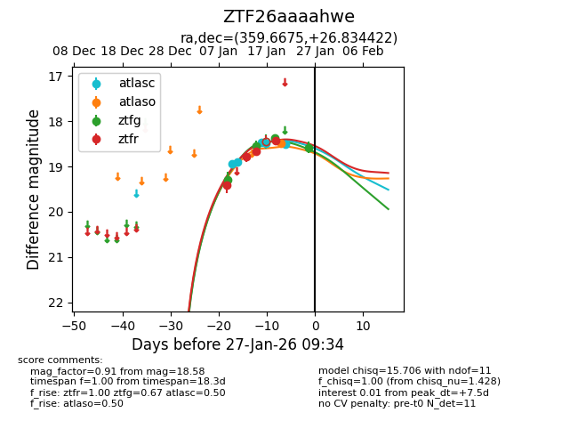
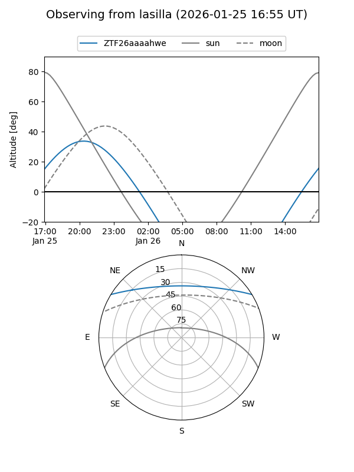
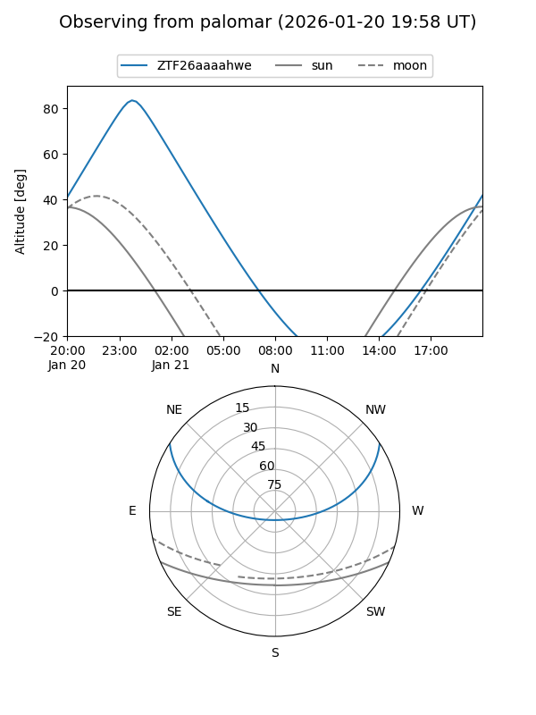
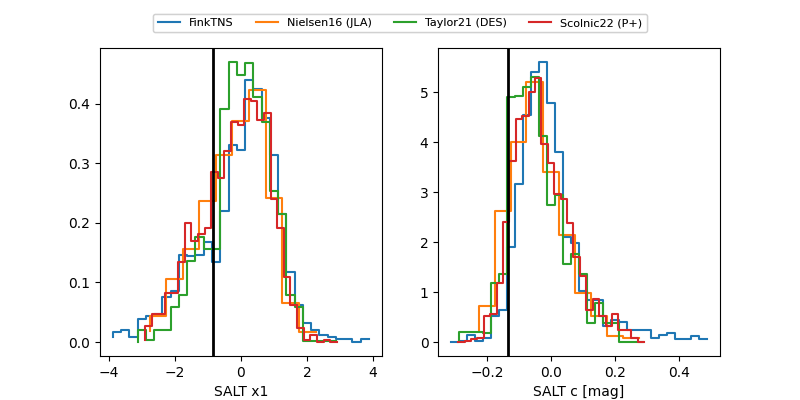

ZTF26aaaahwe
Target ZTF26aaaahwe at 2026-01-17 09:35
Aliases and brokers:
FINK: link
Lasair: link
ALeRCE: link
alt names
ZTF26aaaahwe (ztf,fink_ztf)
Coordinates:
equatorial (ra, dec) = 359.6675,+26.83442
equatorial (HMS+DMS) = 23:58:40.20,+26:50:03.92
galactic (l, b) = (108.6145,-34.56600)
Flags:
Photometry:
last atlasc=18.49, ztfg=18.55, ztfr=18.66
3 atlasc, 2 ztfg, 3 ztfr detections
Lightcurve

Visibility


Additional plots
